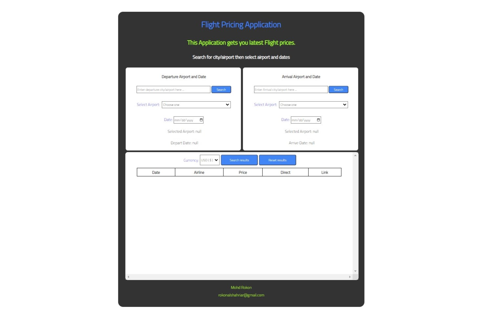
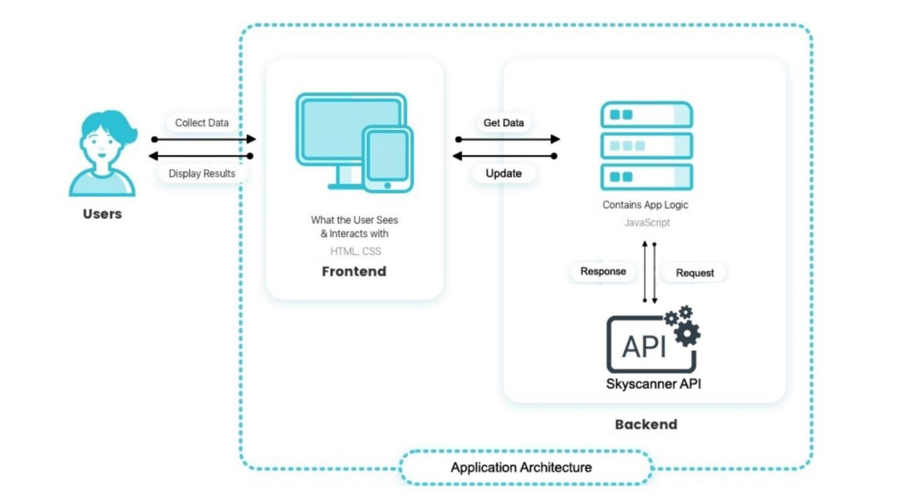

Flight Pricing Application
The Flight Pricing Application is a web-based application that allows users to search for flight prices from all airlines in one place. The application provides users with a user-friendly interface that is easy to navigate. It was developed using JavaScript, HTML and CSS programming languages, and the development tools used were Visual Studio Code and Google Chrome. The Skyscanner Flight Search API from Rapid API was used to provide the necessary flight search results.
The application allows users to input their desired departure city or airport and select the best suitable option of airports to depart from. The user can also select the departure date from the calendar from the departure section. Similarly, the user inputs the arrival city or airport and selects the departure date from the calendar in the arrival section. The results section provides the user with the option to select the desired currency of choice, and the user can then click on the “Search results” button to get the flights.
Once the user clicks on the "Search results" button, the application uses the Skyscanner Flight Search API to retrieve the flight data based on the user's input. The flight details are shown in a table that includes the departure date, airlines, price, direct or indirect flight, and the link to the website of the airline to buy tickets. The user can then choose the flight that best suits their needs and buy the tickets directly from the airline's website.

System Design & Architecture
The architecture of the Flight Pricing Application follows the client-server model.

Front-end: The front-end is the client-side component of the application responsible for presenting the user interface and handling user interactions. It is built using HTML, CSS, and JavaScript.
Back-end - The back-end is the server-side component of the application responsible for handling user requests, processing data, and returning results. It is built using Node.js and uses the Skyscanner Flight Search API from Rapid API to fetch flight data.
Hosting: The Application Tracker is hosted on AWS. AWS provides a scalable and reliable hosting environment that allows the application to be accessed from anywhere in the world. AWS also provides a variety of tools and services that can be used to monitor and manage the application, ensuring that it remains available and secure at all times.
Scalability and Performance
To improve the scalability and performance of the application, the following measures can be taken:
1. Caching: The application can cache frequently requested flight data to reduce the number of requests made to the Skyscanner Flight Search API.
2. Load Balancing: The application can use load balancing to distribute user requests across multiple servers to improve performance.
3. Database Integration: If the application were to store user data, integrating a database would improve scalability and performance by allowing for easier data retrieval and management.